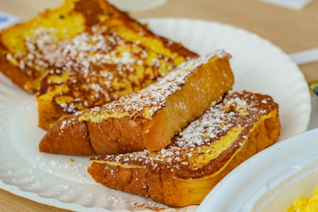

This simple French toast recipe soaks thick slices of bread in a rich egg and milk mixture to make golden, fluffy slices for a delicious breakfast treat. Works with white, whole wheat, brioche, cinnamon-raisin, Italian, or French bread! Delicious served hot with butter and maple syrup.
Find the original here